用户界面（User Interface）简称 UI，在游戏领域是游戏与玩家之间进行交互和信息互换的介质，它实现了游戏相关信息的内部形式与玩家可以接受的形式之间的转换与传递。
用户界面（User Interface）简称 UI，在游戏领域是游戏与玩家之间进行交互和信息互换的介质，它实现了游戏相关信息的内部形式与玩家可以接受的形式之间的转换与传递。用户界面是所有游戏必须包含的重要组成部分。在 Unity 3D 中一般称之为 UI, 在 UE 中称之为 UMG.
那么，游戏 UI 是如何设计并最终呈现给广大玩家的呢？一般项目的工作流中主要有如下几种角色参与：
- 游戏策划。负责游戏需要展示信息的规划和定义。
- 交互设计。负责展示信息的交互设计。
- 游戏美术 2D 设计。负责 UI 的效果图设计。
- UI 重构。负责利用 UI 设计的效果图在游戏工程中复原 UI（UMG）。这个岗位在较小的项目中一般由客户端程序或美术兼任。
- 客户端程序。负责游戏逻辑与 UI（UMG）的绑定及业务信息的展示。
以上角色是按其在工作流中的顺序排列的，分别接受上一步角色的产出作为输入，并产出结果输出给下一步角色。
进一步聚焦第③步, 将具体步骤分解如下图所示.
美术输出效果图后, 需要逐图层切图, 然后导入游戏工程 (如果是复用已有资源则不导入). 再检索工程中的图片资源将效果图复原为游戏项目中的 UI(UMG), 并最终输出给客户端程序做后续开发.
再次审视红色虚线框中的步骤, 结合我们的开发经验, 容易得出几个结论.
- 人力消耗极大, 且无技术提升空间.
- 美术需要维护工程已有资源列表, 极易出现资源冗余.
- 人工复原容易存在细节偏差, 与美术设计不符.
关于第 3 点举个例子, 下面这四个图是项目中真实存在过的资源放大 200% 的结果, 通过人工搜索的方式极易混用.
是否存在一个方案能解决这些游戏开发中常见的问题呢? 为此我调研了目前市面上已有的工作流方案, 主要有几个流派.
2.1 详尽标注流
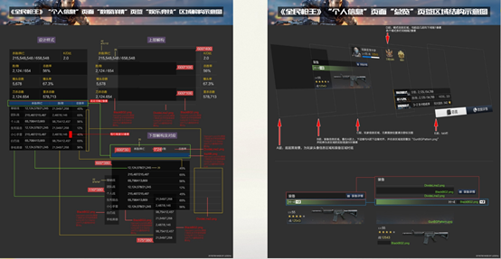
（这个图很模糊，看个大概的结构就可以了）
上图例子是一个极尽细节的标注图, 详细标注了效果图中所有资源的引用 \ 位置 \ 相对关系等等信息.
在我印象中这应该是开发期发生 UI 复原质量纠纷后, 美术输出的 Demo 式标注. 后来就不了了之了, 原因也很简单: 这种方式极大程度的增加了美术的工作量.(据我了解, 一张解构图或结构图需要 3 倍于效果图的制作时间! 有点本末倒置的嫌疑.)
2.2 PSD2UI (Unity) 方案
此 PSD2UI 主要指 Unity Asset Store 中的一个收费插件. 其主要原理是通过解析 PSD 中图层的名字, 在 Unity 中复原图层。
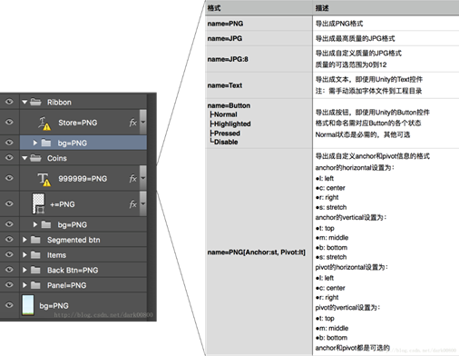
这种做法主要有 2 个问题.
- 美术需要清楚知晓项目工程中已有的所有资源的精确位置.
- 美术需要维护 PSD 的图层命名.
- 美术定义的层次结构不一定能被程序直接使用, 程序后期可能还是要根据逻辑调整层次结构.
据我分析, 这也是 PSD2UI 插件很早就出现在 Asset Store 上却没有广泛流行的原因.
2.3 图像匹配
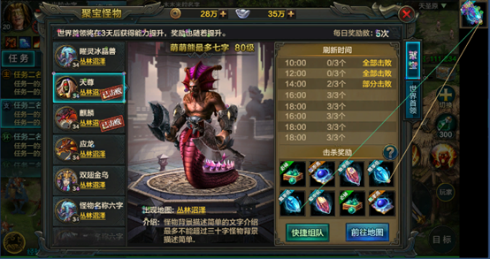
图像匹配主要指图像的模板匹配或 SIFT 特征点匹配, 但用在游戏开发领域, 同样面临着几个问题.
- 模板匹配速度太慢. 曾经做过 200*200 的交叉匹配, 耗时 4 小时. 这在资源数量上千的大型工程中是不可接受的.
- SIFT 特征点匹配严重依赖于匹配参数, 不具备项目无关性.
- 游戏开发中图像有多种变换形式 (主要指九宫拉伸), 匹配结果不具备通用性.
2.4 诉求总结
美术的诉求包括但不限于:
- 我只管出效果图.
- 我不想管游戏工程里资源都在哪里
- 我不想维护 PSD 的图层名, 想怎么命名就怎么命名
- 我不想拥有程序的思维逻辑, 图层爱怎么摆怎么摆.
- 拼 UI 是不可能的, 这辈子都不可能的.
程序的诉求包括但不限于:
- 我也不想管游戏工程里资源都在哪里
- 相同的 UI 功能我只想做一次 (做成 Prefab 或者 UMG, 以后自动引用)
- 我不想工程里有冗余资源
- 拼 UI 是不可能的, 这辈子都不可能的
现有方案或多或少存在一些不可被接受的问题, 那么是否存在一种方案能解决游戏 UI 复原过程中的效率问题呢? 目标简单来说就是让美术的工作极尽简单, 让程序无意义的重复劳动尽量自动化, 一片你好我好复原效果好的和谐景象. 答案就是我们的方案。
在介绍具体原理之前, 先看看本方案与传统工作流的效率和质量对比。
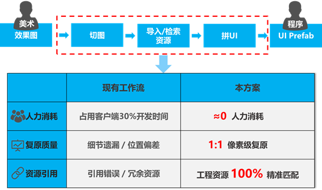
应用本方案后,UI 的复原过程不再占用大量人力开发时间；并且能够 1:1 复原美术效果图；资源引用绝对正确，且工程内不再存在任何冗余资源．
那么我们是怎么做到的呢？
3.1 图像资源的变化形式
美术输出的资源导入到工程中时，可能发生一些变换，这些资源的变换也是传统的图像识别与图像检索不能胜任游戏资源匹配的重要原因，常见的变换形式如下所示：
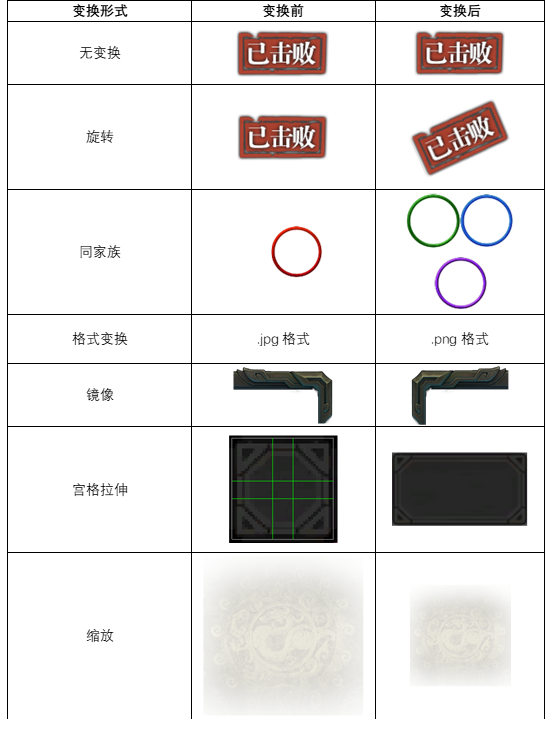
既然这些资源的变换形式阻碍了图像检索, 那方案的第一步呼之欲出, 就是想办法识别这些资源变换前后的映射关系. 我们的方案就是感知哈希。
3.2 感知哈希
3.2.1 哈希的概念
哈希的概念来源于传统密码学，对于任意长度的输入产生固定长度的哈希值。简短的哈希值表示任意长度的输入，使之具备摘要性。传统密码学同时具有单向性和抗碰撞性，单向性是指由哈希值不能反推原输入信息；抗碰撞性是指不同的输入数据的哈希值不能相同。
正是由于单向性和抗碰撞性的要求，决定了哈希函数对输入数据的比特变化敏感，即输入数据的任何一个二进制位发生变化，都会导致输出结果的明显随机变化。
对于数字图像而言，数据图像格式的变化、图像的缩放旋转或分辨率改变等加工操作，都会导致哈希值的剧烈变化。但图像呈现的内容信息却没有发生改变，所以传统密码学的哈希算法并不适用于数字图像检索与匹配。
普通哈希函数结果对比：
原值 | Hash 值 |
FatherAndMotherILoveYou | d1f3bb50ec8144adbc23fda1ba709dbb |
FatherAndMotherILoveyou | 4e8c13234d9aa2a8b45b8d411fb9ff39 |
fatherAndMotherILoveYou | 6bcf71c8b5c9395f70c18393b4284202 |
文件的哈希更不能直接应用于资源检索，因为游戏的资源大多是经过各种变换的，如果直接应用，将会导致匹配率极低，甚至出现无法匹配的情况。
3.2.2 感知哈希的概念
感知哈希的概念于 2001 年首次被提出，Ton Kalker 在一篇关于数字水印的文章中首次提出了感知哈希 (Perceptual Hashing) 的概念，他提出感知哈希函数应该具备这样的特性：
（1）能将大数据量的多媒体对象映射成长度较小的比特序列；
（2）能将感知相近的媒体对象映射成数学相近的哈希值。
感知哈希借鉴了传统密码学的摘要性和抗碰撞性，对于一幅给定的数字图像，输出固定长度的二进制序列，称之为感知哈希值或感知哈希序列。
感知哈希算法在具备了摘要性和抗碰撞性的同时，还保持了对图像格式变化的鲁棒性。即只要图像内容信息不变，不论其存储格式如何，图像的感知哈希值都应该保持不变或者在一个较小的阈值内变化。
本方案在传统感知哈希函数的基础上，提出了一种基于结构信息为主，同时辅以亮度与通道分量做补充的哈希算法 Mix-Hashing，针对游戏内资源的特性，具备了对游戏内图像缩放、旋转、九宫格拉伸和三宫格拉伸的鲁棒。
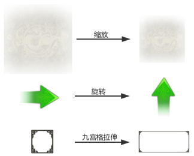
3.2.3 基于结构的感知哈希生成
基于结构的感知哈希生成，采用了基于图像统计特征的灰度均值，简称 AVG-Hashing 算法。这种计算方法速度非常快，因为只需要对有限数量的像素做特征提取。
以下就 AVG-Hashing 的生成步骤作简要描述：
（1）图像标准化为 8*8 尺寸
将任意 mn 尺寸的的图像标准化为 Thumbnail=88。缩放的过程采用双线性插值。
（2）将 Thumbnail 灰化
将步骤（1）中得到的缩略图灰化，灰度计算公式如下所示：
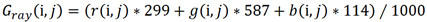
（3）计算 Thumbnail 所有像素的平均灰度值
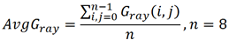（4）对所有像素提取特征并二值化
遍历 Thumbnail 的 8*8 共计 64 个像素，用当前像素的灰度与步骤（3）中求得的灰度均值 AvgGray 比较。大于 AvgGray 则记为 1，小于等于 AvgGray 则记为 0.
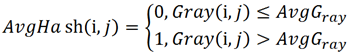
（5）生成感知哈希序列
可以以任意固定顺序扫描 Thumbnail 的 AvgHash 结果，得到的感知哈希序列都具有抗碰撞性。所以一般都采用从 0 开始顺序扫描 Thumbnail 的方式得到序列 AvgH。
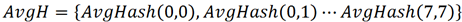
AvgH 是一个 64 位长度的二进制序列。
基于结构的感知哈希生成方法举例如下：
（1）将任意一张图缩放至 8*8 大小
（2）将 8*8 的图像灰化
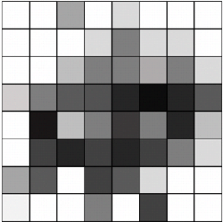（3）取 8*8 共 64 个像素点的灰度平均值
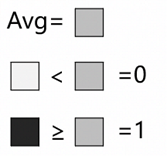（4）逐像素与平均值比较，得到 64 个比特位，组成二进制结果
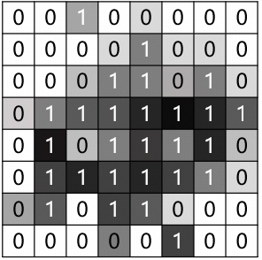
基于结构的感知哈希生成算法是基于统计特性的方法，当数字图像的内容信息高度相似，但统计特性不变时，将会生成相同或相近的感知哈希序列，从而影响匹配结果。
举例如下：
（均值哈希序列一样，但感知不同的图像）
3.2.4 基于亮度与通道分量的补充哈希
本方案提出的补充哈希生成步骤如下：
（1）图像标准化为 8*8 尺寸
将任意 mn 尺寸的的图像标准化为 Thumbnail=88。缩放的过程采用双线性插值。
（2）提取 Thumbnail 的亮度及通道分量特征
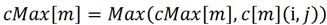
其中，cMax 代表通道分量的最大值，m∈[0,3]，m=[0,3] 时分别代表 Thumbnail[i,j] 的 0-3 通道分量的最大值。c 代表通道分量，m=[0,3] 时分别代表 Thumbnail[i,j] 的 0-3 通道分量值。通道分量值取值范围 [0,255]
（3）计算 Thumbnail 所有像素带透明通道的灰度值
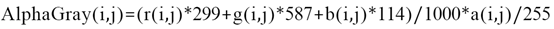
（4）计算 Thumbnail 带透明通道的灰度平均值和分通道平均值
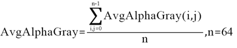
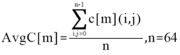
（5）对所有像素提取特征并二值化
遍历 Thumbnail 的 8*8 共计 64 个像素，用当前像素的带透明通道的灰度值与步骤 (4) 中求得的带透明通道的灰度均值 AvgAlphaGray 比较。大于 AvgAlphaGray 则记为 1，小于等于 AvgAlphaGray 则记为 0.
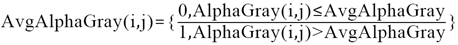
(6) 生成感知哈希序列
可以以任意固定顺序扫描 Thumbnail 的 AvgAlphaHash 结果，得到的感知哈希序列都具有抗碰撞性。所以一般都采用从 0 开始顺序扫描 Thumbnail 的方式得到序列 AvgAlphaH。
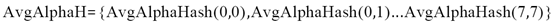
AvgAlphaH 是一个 64 位长度的二进制序列。
(7) 生成补充感知哈希序列
根据第（2）步计算得到的分通道的最大值 cMax[m], 第 (4) 步计算得到的带透明通道的平均灰度值 AvgAlphaGray，以及第 (4) 步计算得到的分通道平均值 AvgC[m]，生成补充感知哈希序列 ExtHash。
ExtHash 是一个 64 位的二进制序列，其组成如下图所示：
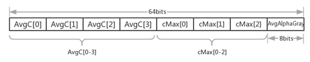
其中，cMax[0-2] 代表 Thumbnail 的 0-2 通道的最大值，抛弃了 cMax[3] 的原因是其代表的是 Alpha 通道的最大值，在一般图像中此值一般为 255，即该图像中透明通道最大的像素点透明度为 0，不能作为抗碰撞性的有效指标，故而去除。
（8）合并感知哈希序列
将第（6）和第（7）步生成的二进制序列级联，即得到一个 128 位的感知哈希序列。
实际上第（7）步骤中 ExtHash 中存的值是 RGBA 的平均值，RGB 的最大值及灰度的平均值。
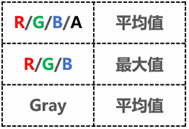
3.2.5 九宫格与三宫格拉伸处理
在游戏项目工程中，需要九宫格拉伸或三宫格拉伸的资源都需要手动设定拉伸参数，并存储在对应的配置文件中，在 Unity 游戏引擎中，是以与资源同名同路径的 meta 文件的形式存在的。该文件配置了资源的拉伸参数以及拉伸方向类型。如下图所示：
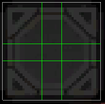 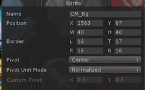
观察九宫格拉伸和三宫格拉伸的原理可以看出，无论资源以什么形式拉伸，其左上、右上、左下、右下四角是不变的。（还有其他非常用数目宫格拉伸形式，原理类似）。
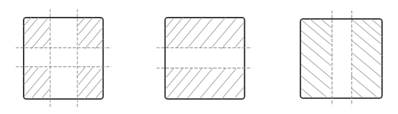
依此理论，在处理宫格拉伸时，可将匹配步骤分为 2 步：
（1）匹配四角
在待匹配资源与工程资源的四角分别取 44 大小的分块，并将 4 个 44 大小的分块组合成 8*8 的 Thumbnail，其后处理手段与前述第 (2)-（8）步一致。
（2）遍历四角匹配结果，按工程内资源配置的拉伸参数分块匹配。
匹配四角后，可能会命中多个结果。此时遍历匹配结果，读取工程内设置的拉伸参数，将拉伸不变的角分块匹配。若全部匹配，则认为找到正确匹配结果。
关于步骤 (1) 中 44 参数取值的说明：此参数为经验值，可取值 00-44 均可，取值 00 相当于步骤（1）命中工程内全部资源，所以需要遍历工程内的所有资源与待匹配资源逐个执行步骤（2）进行分块匹配。不影响最终的匹配结果，但是耗时将会显著变长。所以在 00-44 的取值范围内，取值越大匹配速度越快。
依据经验，4*4 的参数是应用极限，高于此参数取值，将可能导致选取的范围跨越了拉伸区域与不变区域，将降低资源的匹配成功率。
一个典型的九宫格拉伸的资源匹配步骤分为 5 步，如下图所示：
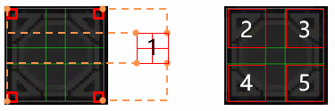
（图中的 1 是由 4 个分块组成的 8*8 区块）
3.2.6 旋转处理
在导出 PSD 为 json 描述文件时，可直接导出图层的旋转信息。
通过上述感知哈希的计算过程可以看出，本方案计算得到的感知哈希序列共 128 位，其中 64 位为亮度与分通道信息 ExtHash，另外 64 位为结构信息 AvgHash。ExtHash 不随图像的旋转变化而变化，AvgHash 会随图像的旋转而变化。但其变化是 Thumbnail 矩阵转置和矩阵翻转的组合，计算相对简单且快速。
所以对于待匹配图像的旋转，可以将 Thumbnail 逐次旋转或转置直至匹配成功或失败。翻转或旋转角度可在逐次计算的过程中方便取得。
对矩阵的变换形式如下图所示：
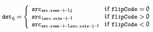
3.2.7 缩放处理
美术同事使用 Photoshop 工作时，Photoshop 对资源的缩放处理是多次取双线性插值，所以为了保持一致，在将图像标准化为 Thumbnail 时（特指图像缩放，取四角组成 Thumbnail 无需处理），需逐次将原始图像缩放至 8*8. 具体步骤为：
（1）取原始图像的宽和高的较大值 m=Max(width,height)
（2）计算得到不大于 m 的最大的 n, 其中 n 是 2 的整数次幂
（3）逐次缩放至 nn 后，n=n/2。直至 n=8. 即得到所需的 88 的缩略图。
这样求得的缩放缩略图具有缩放鲁棒性，与原始大小图像的感知哈希序列高度相似甚至完全一致。
就一个典型的缩放处理过程举例如下，将图像逐次缩放至 8*8 像素大小。
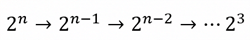
3.2.8 同家族处理
游戏工程中经常用到同家族资源，如物品品质外框、物品图标、技能图标等。这些资源在美术输出效果图时仅列出一种情形，但在实际运行时，可能引用同家族的其他资源，所以在检索过程中，需要将此类资源视作同一家族资源。
处理同家族资源不能使用感知哈希的方法，因为同家族资源可能是感知上相似的，例如物品品质外框，结构相同，只是颜色有差异；也可能是感知上完全不一致，但逻辑上是同家族的，例如物品图标、技能图标。
在本方案中，处理同家族资源主要采用白名单机制，导入资源到工程中时，手动维护一个同家族资源白名单，处于白名单同一家族的资源，在匹配时将被视作同一资源，以此完成对同家族资源的处理。(经共建同事提出的 Issue, 后续考虑将导入的图像与已知图像的哈希做前 64Bits 的比对, 可做近似化操作)
3.2.9 检索匹配流程
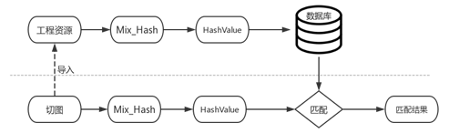
运用本方案提出的基于感知哈希检索的游戏资源匹配方案后，资源检索的匹配流程将如上图中所示。
其中，切图导入工程后，将变成工程资源，对导入的工程资源进行感知哈希计算 Mix_Hash 后，得到对应资源的感知哈希序列 HashValue，并将此感知哈希序列存储进数据库中。
在匹配资源时，用相同的方法计算待匹配切图的感知哈希序列，并使用此 HashValue 在数据库中进行检索，并输出匹配结果。
匹配结果可能会有 2 种情形：
①完全匹配，匹配度为 1. 此时的资源可以直接引用工程中的资源，因为该资源已经在工程中存在。
②不完全匹配，匹配度不为 1 时，说明此时的待匹配资源没有在数据库中命中已有资源。
此时可检查待匹配资源与命中的最相似资源。一般取相似度 95% 为最低相似度，此处的 95% 为经验值。低于最低相似度的资源直接认为是未匹配资源，高于最低相似度的资源认为是匹配成功资源。
3.2.10 匹配度计算
本方案中图像的感知哈希序列为 128 位的二进制序列。汉明距离是衡量两个字符串之间的距离，字符串可以是比特、数字或字母。
待匹配资源感知哈希序列与数据库中已有序列一致时，匹配度为 100%。不相等时计算汉明距离。汉明距离的计算公式为：
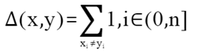
汉明举例的计算实质上就是比较二进制序列中不同的位的个数，举例如下：
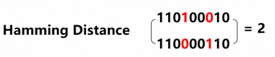
本方案中提出的 128 位的感知哈希序列，图像相似度为 100% 时，其汉明距离为 0；汉明距离小于等于 10 时，认为图像近似相似，其中 10 为经验值。当多幅图像与待匹配图像感知哈希汉明距离均小于 10 时，汉明距离越小越接近相等。
图像相似度的计算公式为：
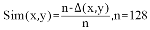
3.2.11 感知哈希 Key 重复时的回溯方案及验算方案
感知哈希的实质是对图像进行高度抽象，将数据量较大的图像抽象为固定长度的二进制序列，在本方案中是 128 位。在带来高度摘要性的同时，同时伴随着信息的损失。信息的损失则会造成在不同的图像上发生感知哈希值重复的问题，影响资源的检索成功率。
针对此问题，本方案设计了感知哈希 Key 重复时的回溯方案，该回溯方案还可用于对成功匹配的资源的验算。
回溯方案步骤如下：
（1）8*8 匹配成功，若汉明距离为 0，且没有重复 key 资源，则匹配成功。
（2）88 匹配成功，汉明距离不为 0，（匹配成功即意味着汉明距离在阈值范围内），则继续回溯至 1616 比对一次。
（3）8*8 匹配成功，汉明距离为 0，且有重复 key 资源，则迭代回溯至不大于原尺寸的 2 的整数次幂尺寸比对，直至匹配成功。
如上述回溯方案调整后，将有如下影响：
（1）增加汉明距离不为 0 时的回溯比对后，资源的匹配成功率能得到进一步提升。考虑到一次 1616 的比对消耗等于 4 次 88 的比对消耗，推算资源匹配的时间将增加一倍。一个典型全屏复杂界面 60 个资源的原匹配时间为 5 秒，调整后约为 10 秒，时间影响有限且能接受。
（2）原有匹配逻辑中，128bits 的哈希值分为 2 部分，基于结构的 64bits 汉明距离阈值配置为 5，基于通道的 64bits 汉明距离阈值配置为 10. 这种阈值配置在 8*8 的分辨率下不具有对所有项目的普适性。
调整后，加入了 16*16 分辨率下的比对，将显著提升匹配的准确性，且阈值无需修改即具普适性。
感知哈希值的重复案例举例如下：
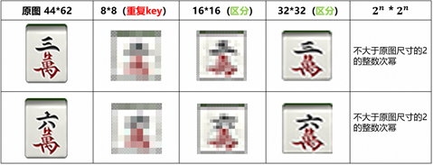
在 88 分辨率下，上图中的 “三萬” 和“六萬”的资源感知哈希值完全重复，汉明距离为 0. 此时将资源缩放至 1616，相当于 4 个 88 的图像分别比对感知哈希值。如此操作后在 1616 的分辨率下即得以区分这 2 个资源。如果在 1616 仍然不能区分资源，则进一步回溯至 3232 的大小比对 8 个 88 的图像，直至缩放至不大于原图尺寸的 2 的整数次幂的尺寸大小。这样即使在 88 分辨率下感知哈希值重复，也能通过回溯区分。
回溯方案也可用于在 8*8 匹配成功时的资源的进一步验算，步骤与上述回溯方案步骤一致。
3.2.12 速度及准确性评价
经非严格测试，运用本方案提出的感知哈希检索算法能较快计算资源的感知哈希序列，资源总量 5000 个的情况下，总计算时间约 55 秒。
全量计算资源的感知哈希值只需要一次，后续可以直接读取文件，因此总计算时间非关键条件。
匹配速度：140 个资源匹配速度约 5 秒，能较好满足工具的可用性要求。
准确性：>99% 准确度。
3.2.13 匹配举例
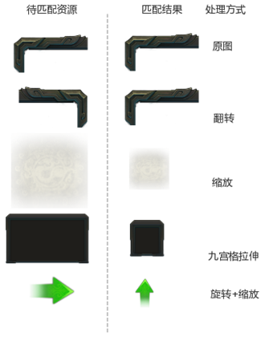
如上图所示，应用本方案后，可以精准的识别切图与工程资源的资源变换形式，符合方案的预期设计。
经过图像检索后, 我们已经建立工程中已有资源的指纹库, 在新导入资源时, 先与指纹库中已有资源的指纹进行比对, 不存在的资源才导入到工程中, 而且资源的指纹与资源的文件名是无关的. 也就是说我们已经解决了 4 个问题:
（1）美术说: 我不想管游戏工程里资源都在哪里.
（2）程序说: 我也不想
（3）美术说: 我不想维护 PSD 的图层名, 想怎么命名就怎么命名.
（4）程序说: 我不想工程中有冗余资源.(重复指纹的图像不会被导入到工程中)
接下来就要解决 Prefab(UMG) 的引用了, 这样做是为了解决这两个问题:
（1）美术说: 我不想拥有程序的思维逻辑, 图层爱怎么摆怎么摆.
（2）程序说: 相同的 UI 功能我只想做一次 (做成 Prefab 或者 UMG, 以后自动引用)
4.1 基于感官的树生成算法
为了达到这个目标, 首先需要思考一个问题: 美术输出的效果图与程序使用的 UI 有什么联系? 我们发现了这样一个结论, 这个结论也是后续流程的理论基础.
“在感官不变的情况下, 效果图的感官树与层次结构无关”.
这句话有点拗口, 但必须理解清楚了才能执行后续流程. 详细解释一下这个理论.
诚然, 美术的作图思维与程序基于业务逻辑的思维是不一致的, 但美术和程序的输出都是一张感官相同的图——所谓” 感官” 就是一眼看上去的感觉——考虑到组成这张图的图层无论是在 PS 还是在游戏引擎中都会被渲染为一个个的矩形，无论美术如何调整效果图的层次结构（比如调整兄弟节点为父子节点，或者新建图层组）只要效果图的感官不变，组成效果图的各个图层的包围盒的包含关系就是不变的，这种包含关系组成的一棵树（取名感官树）也是不变的。
熟悉 BVH 树的同学可能很快发现感官树其实类似 BVH 树，但相对 BVH 树来说，感官树没有中间节点，其节点全部由有效图层组成。
举例说明，如下图所示为一个物品框的效果图。
美术在 PS 中的图层结构与程序调整后的层次结构如下图所示（以 Unity 举例，UE 同理）。
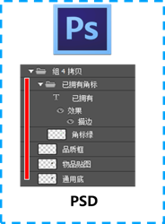 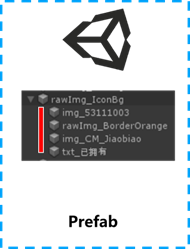
虽然层次结构不一样（PSD 中新建了一个图层组，包含了文本 “已拥有” 和“角标绿”作为子节点），但这两种层次结构的感官树是一样的。
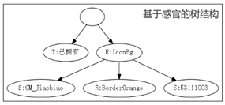
还是上图这个树形结构，能演变为下面几种不同的层次结构依然保持稳定。
这个感官树就为 PSD 到 UI 的转换，乃至从 UI 到 PSD 的反向导出提供了关键关联信息。
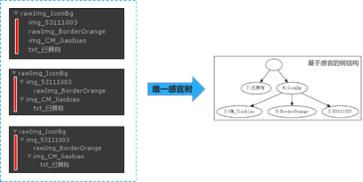
4.2 树的匹配模型
将效果图转换为树之后，又面临一个新的问题：美术输出的效果图相对程序已经做好的预制体可能有信息的缺失，或者有额外的需求新增。
举例说明，下图分别为缺失和新增的场景。
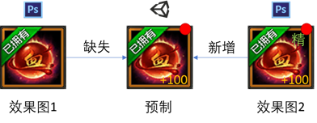
这就导致树的匹配就不如前述图像检索那般精准，需要容忍一定的相似度偏差，只要相似度满足一定阈值范围，就应该认定为是同一棵树。
树的匹配模型主要分为 3 种：嵌入匹配、包含匹配、包容匹配。
这三种匹配模型简单画图解释如下。
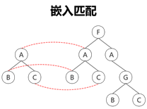
要求源树与目标树的节点一一对应，不允许节点的缺失与额外节点的插入。
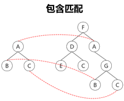
要求源树与目标树的节点一一对应，允许额外节点的插入，但不允许节点的缺失。
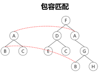
相对嵌入匹配和包含匹配来说，包容匹配的容忍度最高，允许额外节点的插入，同时允许部分节点的缺失。
对于这三种匹配模型来说，衡量其有效性的指标主要有三个：匹配精确度、匹配率和时间复杂度。
就我们的具体需求而言，沿前述分析的结论可知，我们需要采用树的包容匹配模型，才能适应美术的工作流。
4.3 树的结构编码
将 PSD 或 UI 转换为树形结构后，面临的下一个问题是如何表示树形结构。参考霍夫曼编码，我们采用了树的结构编码，将树形结构中节点的关系抽象为一个字符串。将节点的父子关系 / 亲属关系的判断转换成了字符串的比较，更确切的说是字符串前缀的比较。
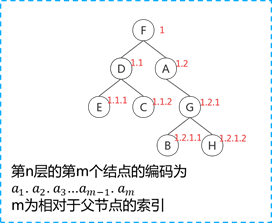
4.4 树的相似度计算公式
如何评价树的相似度，进而评估 PSUI/ UI 与 UI 之间的相似度呢？我们引入了树的相似度计算公式。
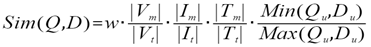
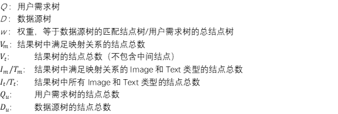
Sim(Q,D) ∈ [0,1]。 这样，我们就有了量化的评价标准。
4.5 工作流演变
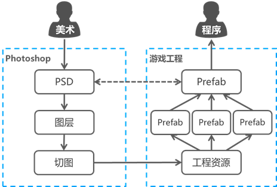
至此，我们的工作流演变为如上图所示的步骤。
（1）美术输出 PSD 文件，经 PS 插件自动导出为各图层切图。
（2）编辑器工具与工程资源匹配，已存在即引用，不存在则导入。
（3）全量生成感官树型结构的预制。
（4）以第 3 步的结果，尝试匹配已存在的公共预制并替换。
（5）输出结果预制。
上述过程听上去较为复杂，但全部由编辑器工具自动完成，耗时在 1min（一般情况）以内，简单高效。
5.1 面向 Unity 3D 的工具
图示为 U3D 的工具界面，1 个入口 5 个功能，可以快速复原 UI。
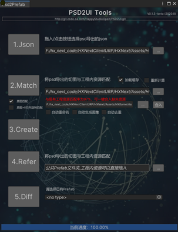
5.2 面向 UE 的工具
感谢 satinhuang(黄山朋) 的工作。
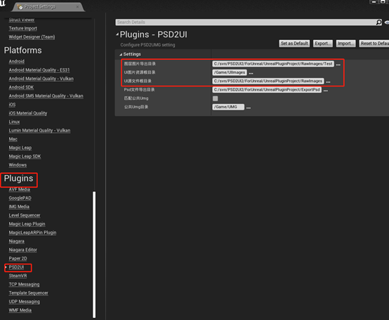
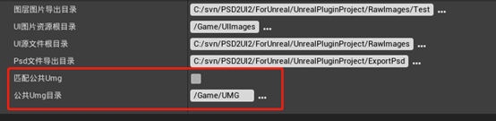
说到面向 UE 的工具，不得不提及一些 U3D 和 UE 之间实现细节之间的差异。U3D 支持 GameObject 的嵌套，UE 的 UMG 只能平铺，造成了一些困扰。
在我们的工作流中，首次导入的效果图按逻辑划分为子 UMG 后（划分操作是程序手动操作的，仅首次），后续效果图会按相似度计算的结果引用已生成好的 UMG。
5.3 面向迭代和需求变更
面向 U3D 的工具在欢乐游戏工作室内部应用了一年半，在此过程中发现了一个迭代上的效率瓶颈。由于需求的频繁变更，美术需要经常性调整效果图，可能是部分图层的位置，可能是换皮，甚至可能改的面目全非。这无可厚非，毕竟 UI 的迭代也是为玩法的最终呈现服务的。
这确实给我们带来了困扰，虽然可以一键（其实是点 3 个按键）从 PSD 复原到 UI。但工作流的理论基础是效果图不发生变化。一旦效果图发生变化——而且是不可预知的变化——工作流的便利性将不复存在。于是在应用初期，每次发生需求变更，都需要重新生成一次 UI，重新添加组件，重新绑定变量，这也是一个不小的工作量。
为此，我们改进了面向迭代的工作流。
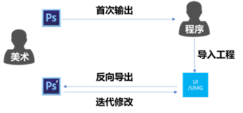
如图所示，美术首次输出效果图 A 时，程序借由工具导入工程，形成 UI/UMG。然后反向导出效果图 A’。反向导出 A’的过程中夹带了再次导回的必要信息。后续美术迭代修改时，修改的目标是 A’，这样就解决了迭代工作流中的效率问题。
5.4 面向美术的工作细节
设计这个工作流时，我心里时刻惦记的都是美术同学的工作负荷。主要的原因还是想工具能够做的就一并处理了，希望能减轻美术的压力。
所以，对于美术来说，他们的工作变成了下面这样：
（1）图层命名。不用管了，因为图的匹配依赖的是图的内容识别。
（2）图层结构。不用管了，组信息不会体现到感官树结构中。
（3）输出切图。不用管了，我们为美术设计了基于自相关系数的自动切图工具。（方案还在专利申请流程中，后续再详细介绍，请见谅）
（4）图层合并。这个还是要管的…… 毕竟工具并不能揣测美术的哪些图层需要合并输出。但我们也为美术准备了一些便利特性。
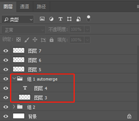
在美术认为需要合层的图层组上，命名包含 automerge 时，工具会自动合层并输出。这样设计的考虑是不改变美术原始文件的细节，避免因为工具的引入造成对美术工作的困扰。
至此，美术的工作就彻底只剩下效果图的制作，也只需要专注于效果图的制作。
6.1 应用效果
以下面这张图为例，这已经算是一个相当复杂的效果图，按手动复原工作流来算，预估复原时间约 1.5 小时。
应用了新工作流后，复原时间大致花费如下：
如果资源库没有发生变化，可以将资源库序列化到本地文件，则中间的 “资源库计算” 也是可以省略的。那么整体的复原时间大致就是 33 秒，即使全量计算也仅 1 分 9 秒。
相较于约 1.5 小时的手工流，效率提升不言而喻。
目前，本方案的一系列工具已在欢乐游戏工作室内部的多个项目应用。
6.2 方案拓展
对于存量项目来说，项目开发的历史越久，工程内存在冗余资源的可能性就越高。
比如：下面同样的一张图，可能以不同的名字藏在工程中的多个子目录中，浪费包量。
而方案的主体组成部分之一，游戏资源的图像检索对于冗余资源的检测尤为有效。已与多个存量项目接洽，接入冗余资源扫描的功能，并已取得初步成效。相关通用工具的开发正在进行中，敬请期待。
这个工具最初的构想是在 2021 年 8 月，到 12 月初步成型后，在PUBGM项目内试点，目前工作良好。
后续也希望能贡献到开源社区，为游戏行业生态提升一点点效率。
开源地址：https://git.woa.com/HappyStudioOpen/PSD2UI.git 如有权限访问问题，请与muidarzhang联系。